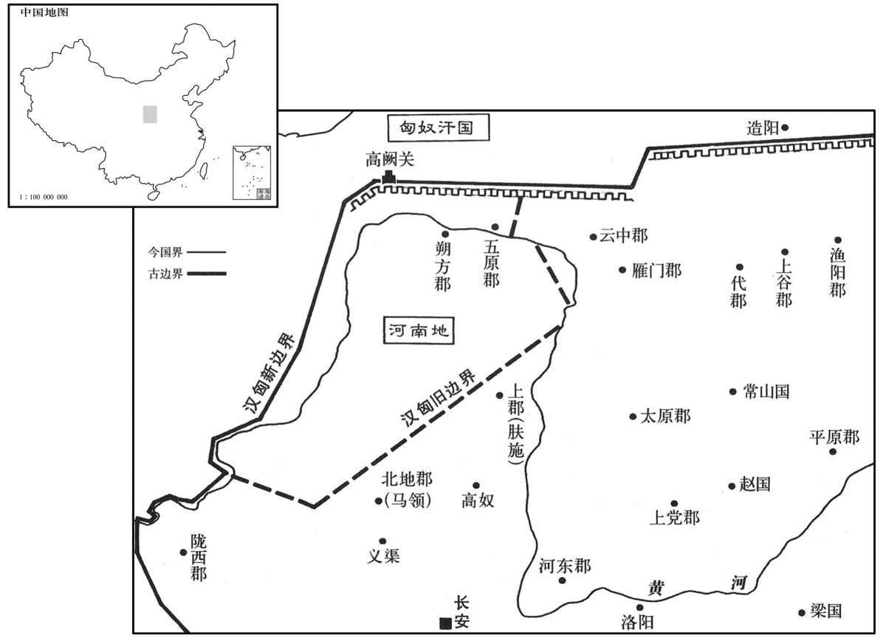

公元前127年资治通鉴：本年记事、原文与白话对照
按原书编年位置阅读；追叙和史论不等于本年发生的事件。白话采用所据译本，缺译不以生成译文补齐。
卷18 · 本年记事
公元前127年 · 汉世宗孝武皇帝元朔二年
元朔二年〔（甲寅、前一二七）〕
本年事件索引（现代整理）

本年形势与背景参考图
冬，赐淮南王几杖，毋朝。〔朝，直遥翻。考异曰：汉书武纪曰：“赐淮南、菑川王几杖，毋朝。”颜师古曰：“淮南王安，菑川王志，皆武帝诸父列也，故赐几杖。”按诸侯表，菑川王志在位三十五年，以元光五年薨，齐悼惠王世家、高五王传皆同。此云菑川王志，误也。〕
冬季，武帝赏赐淮南王刘安几案和手杖，恩准他不必来京朝见。
主父偃说上曰：“古者诸侯不过百里，强弱之形易制。今诸侯或连城数十，地方千里，缓则骄奢，易为淫乱，急则阻其强而合从以逆京师；〔说，式芮翻。易，以豉翻。从，子容翻。〕以法割削之，则逆节萌起；〔师古曰：萌，谓事之始生，如草木之萌芽也。〕前日鼌错是也。〔事见十六卷景帝前三年。鼌，直遥翻。错，千故翻。〕今诸侯子弟或十数，而适嗣代立，〔适，读曰嫡。〕余虽骨肉，无尺地之封，则仁孝之道不宣。愿陛下令诸侯得推恩分子弟，以地侯之，彼人人喜得所愿；上以德施，实分其国，不削而稍弱矣。”上从之。春，正月，诏曰：“诸侯王或欲推私恩分子弟邑者，令各条上，〔上，时掌翻。〕朕且临定其号名。”于是藩国始分，而子弟毕侯矣。
主父偃劝说武帝道：“古代诸侯的封地不超过方圆百里，朝廷强地方弱的这种格局，容易控制。现在的诸侯有的连城数十座，封地方圆千里，朝廷控制较宽时，他们就骄横奢侈，容易做出淫乱的事情，朝廷控制一紧时，他们就会凭借自身的强大而联合起来反叛朝廷；如果用法令来分割削弱他们，就会产生叛乱的苗头。以前晁错推行削藩政策而导致吴楚七国叛乱就是这种情况。现在诸侯王的子弟有的多达十几人，而只有嫡长子继承王位，其他人虽然也是诸侯王的亲生骨肉，却不能享有一尺的封地，这就使得仁孝之道不明显了。希望陛下命令诸侯王可以把朝廷给他的恩惠推广到其他子弟的身上，用本封国的土地封他们做侯，他们人人都为得到了希望得到的东西而欢喜；陛下用的是推行恩德的方法，实际上却分割了诸侯的封国领地，朝廷没有采用削夺的政策，而王国却逐渐衰弱了。”武帝听从了他的意见。春季，正月，武帝下诏说：“诸侯王中有想推广自己所享受的恩惠，分封领地给子弟的，命令各自一一奏报，朕准备亲自给他们确定封邑的名号。”从此之后，诸侯王国开始被分割，而诸侯王的子弟们都成了侯了。
匈奴入上谷、渔阳，杀略吏民千余人。遣卫青、李息出云中以西至陇西，击胡之楼烦、白羊王于河南，得胡首虏数千，牛羊百余万，走白羊、楼烦王，遂取河南地。诏封青为长平侯；〔班志，长平侯国属汝南郡。〕青校尉苏建、张次公皆有功，封建为平陵侯，次公为岸头侯。〔据功臣表：平陵侯食邑于南阳郡武当县界。晋灼曰：河东皮氏县有岸头亭。校，户教翻。〕
匈奴入侵上谷郡、渔阳郡，杀害和掳掠官吏百姓一千多人。武帝派遣卫青、李息从云中郡出击，向西一直打到陇西，在黄河以南进攻匈奴的一方的楼烦王和白羊王，获得匈奴首级和俘虏数千，夺得牛羊一百多万头，赶走了白羊王和楼烦王，于是就夺取了黄河以南地区。武帝下诏封卫青为长平侯；卫青的校尉苏建和张次功，都立了军功，武帝封苏建为平陵侯，封张次功为岸头侯。
主父偃言：“河南地肥饶，外阻河，蒙恬城之以逐匈奴，内省转输戍漕，广中国，灭胡之本也。”上下公卿议；皆言不便。〔下，遐嫁翻。〕上竟用偃计，立朔方郡，使苏建兴十余万人筑朔方城，〔括地志：夏州方朔方县北什贲故城，按是苏建筑；什贲之号，盖出蕃语也。宋白曰：汉朔方郡治三封县，今长泽县有三封故城。什贲故城，今为德静县治。〕复缮故秦时蒙恬所为塞，因河为固。转漕甚远，自山东咸被其劳，〔被，皮义翻。〕费数十百巨万，府库并虚；汉亦弃上谷之斗辟县造阳地以予胡。〔孟康曰：县斗僻，曲近胡。师古曰：斗，绝也，县之斗曲入匈奴界者，其中造阳地也。杜佑曰：造阳，在今妫川郡之北。辟，读曰僻。予，读曰与。〕
主父偃说：“黄河以南地区，土地肥沃富饶，对外有黄河天险为屏障， 蒙恬当年在此地修筑城池以驱逐匈奴，对内节省了转运输送屯戍漕运的人力物力，又扩大了中国的疆域，这是消灭匈奴的根本方法。”武帝把他的意见交给公卿大臣讨论；大家都说不便利。武帝终究还是采用了主父偃的计谋，设置了朔方郡，派遣苏建征调十多万民夫修筑朔方城，又修缮原秦王朝时期蒙恬所建造的要塞，利用黄河天险作屏障。水陆运输的路程十分遥远，自崤山以东的地区，人民都蒙受运输的劳苦，耗资高达数十百万万，钱府粮库被支付一空。汉朝还放弃了上谷郡所辖的与匈奴犬牙交错的僻远县份��造阳县，把这片土地给了匈奴。
三月，乙亥晦，日有食之。
三月，乙亥晦（三十日），发生日食。
夏，募民徙朔方十万口。
夏季，汉朝廷招募了十万百姓迁居朔方郡。
主父偃说上曰：“茂陵初立，〔初立于建元二年。〕天下豪杰，并兼之家，乱众之民，皆可徒茂陵；内实京师，外销奸猾，此所谓不诛而害除。”上从之，徙郡国豪杰及訾三百万以上于茂陵。〔訾，与赀同。〕
主父偃对武帝说：“茂陵邑刚刚设立，天下有名的豪强人物、兼并他人的富家大户、鼓励大众动乱的人，都可以迁移到茂陵邑居住；这样对内充实了京师，对外消除了奸邪势力，这就是所说的不用诛杀就消除了祸害。”武帝听从了他的意见，迁徙各郡国的豪强人物和财产超过三百万钱以上的富户到茂陵邑居住。
轵人郭解，〔班志，轵县属河内郡，音止。〕关东大侠也，亦在徙中。卫将军为言：“郭解家贫，不中徙。”〔为，于伪翻，言其贫不当在见徙之数。中，竹仲翻。〕上曰：“解，布衣，权至使将军为言，〔师古曰：将军为之言，是为其所使也。〕此其家不贫。”卒徙解家。〔卒，子恤翻。〕解平生睚眦杀人甚众，〔师古曰：睚，音厓，举眼也；眦，即眦字，谓目匡也；言举眼相忤者，即杀之也。一说：睚，五懈翻；眦，士懈翻。睚眦，瞋目貌。二说并通。〕上闻之，下吏捕治解，〔下，遐嫁翻。〕所杀皆在赦前。轵有儒生侍使者坐，客誉郭解，〔誉，音余。〕生曰：“解专以奸犯公法，何谓贤！”解客闻，杀此生，断其舌。〔断，丁管翻。〕吏以此责解，解实不知杀者，杀者亦〔【章：乙十一行本“亦”下有“竟”字；孔本同。】〕绝莫知为谁。吏奏解无罪，公孙弘议曰：“解，布衣，为任侠行权，以睚眦杀人；解虽弗知，此罪甚于解杀之，当大逆无道。”〔当，谓处断其罪，盖以大逆无道之罪坐郭解也。〕遂族部解。〔考异曰：荀纪以郭解事着于建元二年。按武纪，“建元二年初置茂陵邑”，“三年赐徙茂陵者钱”；当是时，卫青、公孙弘皆未贵。又，“元朔二年徙郡国豪杰于茂陵”；此乃徙解之时也。〕
轵县人郭解，是函谷关以东地区的著名侠士，也在被迁徙之列。 卫将军替郭解说好话：“郭解家中贫困，不合迁徙的标准。”武帝说：“郭解是平民，他的权势大到使将军替他说情，这证明他家不穷。”终究迁徙了郭解全家。郭解平生因被人瞪视之类的小事杀了许多人，武帝听说了，就下令司法官吏把郭解逮捕，立案审查，审查的结果说明，郭解所犯的罪都在颁布赦令之前。轵县有位儒生陪侍前来审案的使者坐，座中客人赞扬郭解，儒生就说：“郭解专门以奸邪触犯国法，怎么能说他贤能！”郭解的门客听了这话，就杀死了这个儒生，并割去他的舌头。审案官吏用这件事来责问郭解，郭解确实不知道是谁杀的人，杀人凶手到最后也没有查清是谁。官吏向武帝奏报郭解无罪，公孙弘议论说：“郭解只是一个平民百姓，做行侠弄权的事情，看谁不顺眼就随意杀掉；轵县儒生的被杀，郭解虽然不知情，但这个罪比郭解亲手杀人还要大，应按大逆无道的罪名判决论罪。”于是就把郭解灭族。
班固曰：古者天建国，诸侯立家，自卿大夫以至于庶人，各有等差，是以民服事其上而下无觊觎。〔师古曰：觊，幸也；觎，欲也；幸得其所欲也。觊，音冀。觎，音俞，又音喻。〕周室既微，礼乐、征伐自诸侯出；桓、文之后，大夫世权，陪臣执命。〔师古曰：陪，重也。大夫世权，晋六卿、鲁三桓、齐田氏是也。陪臣执命，阳虎之类是也。诸侯之臣，于天子为陪臣；大夫之家臣，于诸侯为陪臣。〕陵夷至于战国，合从连衡，〔从，子容翻。衡，读曰横。〕繇是列国公子，魏有信陵，赵有平原，齐有孟尝，楚有春申，皆藉王公之势，竞为游侠，鸡鸣狗盗，〔事见三卷赧王十七年。〕无不宾礼。而赵相虞卿，弃国捐君，以周穷交魏齐之厄；〔事见五卷周赧王五十六年。〕信陵无忌，窃符矫命，戮将专师，以赴平原之急；〔事见五卷赧王五十七年。将，即亮翻。〕皆以取重诸侯，显名天下，搤腕而游谈者，以四豪为称首。〔师古曰：搤，捉持也，音戹。腕，乌贯翻。四豪，即魏信陵以下也。〕于是背公死党之议成，守职奉上之义废矣。〔背，蒲妹翻。〕及至汉兴，禁网疏阔，未知匡改也。是故代相陈豨从车千乘，而吴濞、淮南皆招宾客以千数；〔从，才用翻。濞，普懿翻。〕外戚大臣魏其、武安之属竞逐于京师，布衣游侠剧孟、郭解之徒驰骛于阎闾。权行州域，力折公侯，众庶荣其名迹，觊而慕之。虽其陷于刑辟，〔辟，毗亦翻。〕自与杀身成名，若季路、仇牧，死而不悔。〔季路死于卫侯辄之难，仇牧死于宋闵公之难，事并见左传。〕故曾子曰：“上失其道，民散久矣。”〔见论语。〕非明主在上，示之以好恶，〔好，呼到翻。恶，乌路翻。〕齐之以礼法，民曷由知禁而反正乎！古之正法：五伯，三王之罪人也；而六国，五伯之罪人也；〔伯，读曰霸。〕夫四豪者，又六国之罪人也。况于郭解之伦，以匹夫之细，窃杀生之权，其罪已不容于诛矣。观温良泛爱，振穷周急，谦退不伐，亦皆有绝异之姿。惜乎，不入于道德，苟放纵于末流，杀身亡宗，非不幸也。
班固曰：古时候天子封立诸侯之国，诸侯封立大夫之家， 从卿大夫直到平民百姓，各有等级，由于这个原因，所以百姓诚心侍奉他们的上司，而臣下没有觊觎篡夺之心。周王室衰微之后，礼乐制度和征伐命令从诸侯发出；到齐桓公、晋文公之后，大夫世代掌握国家权力，又发展到大夫的家臣执掌一国政令。逐渐发展到战国，出现了合纵连横，于是列国的公子，魏国有信陵君，赵国有平原君，齐国有孟尝君，楚国有春申君，他们都凭借王公的权势，争着延揽游侠，连鸡鸣狗盗之徒都受到嘉宾的礼待。赵国的相虞卿，抛弃了国家和君主，去解救走投无路的朋友魏齐的厄运；信陵君魏无忌，偷盗兵符假传王命，杀害将领控制军队，用来解救平原君的危急；他们都因此增加了在诸侯中的影响，向天下人炫耀了名声，扼腕游说的人，把这四位豪杰当作最值得称道的人。于是，就形成了背叛国家而为私交献身的社会舆论，遵守职责侍奉君主的道义就被废弃了。等到汉朝建国，法网不严密，不知道改正这种弊端。所以代国的丞相陈用千辆车子做随从队伍，而吴王刘濞、淮南王刘安都招集宾客数以千计；外戚大臣魏其侯窦婴、武安侯田之类的人，在京师争权夺利，平民游侠剧孟、郭解之流，横行于乡里，称霸一方，其势力可挫败公卿王侯，众多的百姓都觉得这些人的名声事迹很光荣，向往羡慕他们。百姓即便是犯罪而陷入死地，自己却以杀身成名而引以自豪，就好象当年的季路、仇牧一样，到死也不后悔。所以曾子说：“君主丧失原则，百姓离心离德已有很长时间了。”如果没有贤明的君主在上，告知百姓什么行为是该受到表彰的，什么行为是应该摈弃的，并且用礼义法度去约束他们，那些百姓怎么能知道什么是违犯禁令的行为，从而改邪归正呢！按照古代的公正法则：春秋时期的五霸，是三代圣王的罪人；而战国时期争雄的六国，是五霸的罪人；至于说到信陵君等四豪，又是六国的罪人。更何况象郭解之流的人，只不过是个渺小的平民百姓，却窃取生杀大权，他的罪恶已到了非杀不可的地步了。再看郭解的温良博爱，接济穷困，解救急难，谦虚退让而不自夸，也都不同凡响。可惜啊，象郭解这般人物，不按照道德规范行事，却在行侠这种社会末流中苟且放纵，最后自己身死，全族被杀，这并非是不幸。
荀悦论曰：世有三游，德之贼也：一曰游侠，二曰游说，三曰游行。〔说，式芮翻。行，下孟翻。〕立气势，作威福，结私交以立强于世者，谓之游侠；饰辩辞，设诈谋，驰逐于天下以要时势者，谓之游说；〔要，一遥翻。〕色取仁以合时好，〔好，呼到翻。〕连党类，立虚誉以为权利者，谓之游行。此三者，乱之所由生也；伤道害德，败法惑世，〔败，补迈翻。〕先王之所慎也。国有四民，各修其业；不由四民之业者，谓之奸民。〔四民，士、农、工、商也。〕奸民不生，王道乃成。
荀悦论曰：世上有三游，是破坏道德的奸贼：一是游侠，二是游说， 三是游行。树立名气声望，作威作福，结交私人党羽，用来称强于世的，称为游侠；修饰辩辞，设置诡计诈谋，周游天下以操纵时势的，称为游说；和言悦色，以此迎合当世君主的喜好，结连党羽，扩大虚名以谋取权利，这样的人，称作游行。这三类人，都是产生祸乱的根源；他们伤害道德，败坏法度，迷惑民心，所以先王慎重对待。国家有士、农、工、商四种民众，各自从事自己的职业；凡是不从事这种种职业的人，称为奸民。没有奸民，王道政治就实现了。
凡此三游之作，生于季世，周、秦之末尤甚焉。上不明，下不正，制度不立，纲纪弛废；以毁誉为荣辱，不核其真；〔誉，音余；下同。〕以爱憎为利害，不论其实；以喜怒为赏罚，不察其理。上下相冒，万事乖错，是以言论者计薄厚而吐辞，选举者度亲疏而举笔，〔度，徒洛翻。〕善恶谬于众声，功罪乱于王法。然则利不可以义求，害不可以道避也。是以君子犯礼，小人犯法，奔走驰骋，越职僭度，饰华废实，竞趣时利。〔趣，七喻翻。〕简父兄之尊而崇宾客之礼，薄骨肉之恩而笃朋友之爱，忘修身之道而求众人之誉，割衣食之业以供飨宴之好，〔好，呼到翻。〕苞苴盈于门庭，聘问交于道路，〔裹曰苞，藉曰苴。诗笺：以果实相遗者苞苴之。又曰：苞苴，裹鱼肉，或以苇，或以茅。左传注云：聘，执玉帛以相存问。〕书记繁于公文，私务众于官事，于是流俗成而正道坏矣。
三游的形成，都出现在末世，周、秦两代的末世尤为严重。君上不明，臣下不正，制度不立，纲纪废弛；把社会舆论的褒贬作为尊荣或困辱的依据，不去核实这些舆论的真假；根据好恶来决定利害关系，不考虑是否属实；根据喜怒决定奖赏或惩罚，不去分析其中的道理。上下相互冒犯，万事全都混乱错误，因此，发表评论的人，看对方与自己交情的厚薄来决定怎样张口说话；负有推荐官员职责的人，估量对方和自己关系的亲疏而用笔写出推荐评语；善与恶的区分，错误地受众人评价的制约；功与罪的判定，也和国法的规定相矛盾。像这样的话，就不能遵循道义去谋求利益，也无法根据道义去避开祸害。所以君子违背礼义，小人触犯法律，奔走游说，越职侵权，破坏法度，追求浮华，摈弃实质，争着追求一时之利。轻视尊奉父兄的大义，而重视对待宾客的礼节，减少骨肉之间的亲恩，而加重朋友之间的情谊，忘记了自己修养的原则，而追求众人的赞誉，损伤衣食来源的农桑本业，用来满足盛宴豪饮的欲望，馈赠礼物的人挤满了门庭，探访问候的人在道路上随处可见，私人交往的书信比官府公文繁忙，处理的私事此官府公事还多，于是，流俗形成，而正道却衰败了。
是以圣王在上，经国序民，正其制度；善恶要于功罪而不淫于毁誉，〔要，一遥翻。〕听其言而责其事，举其名而指其实。故实不应其声者谓之虚，情不覆其貌者谓之伪，〔覆，敷又翻。〕毁誉失其真者谓之诬，言事失其类者谓之罔。虚伪之行不得设，〔行，下孟翻。〕诬罔之辞不得行，有罪恶者无侥幸，无罪过者不忧惧，请谒无所行，〔请，求也。谒，告也。〕货赂无所用，息华文，去浮辞，〔去，羌吕翻。〕禁伪辩，绝淫智，放百家之纷乱，壹圣人之至道，养之以仁惠，文之以礼乐，则风俗定而大化成矣。
所以圣明的君主在位时，治理国家，整顿百姓，严明有关制度； 善与恶的区分主要取决于是立功还是犯罪，而不受舆论毁誉的扰乱，听其言还得责求行事，举出名还要指出实。所以，名不副实的称之为虚，表里不一的称之为伪，毁誉不符合实际的称之为诬，议论事情丧失原则的称之为罔。虚伪的行为不许出现，诬罔的言论不得流行，有罪恶的人不能侥幸逃避惩罚，没有罪恶过失的人不必担忧恐惧，私人请托处处碰壁，贿赂无人接受，抛弃浮华虚文，淘汰虚言巧语，禁止强词夺理，杜绝不正当的智谋，斥退百家之学的纷乱，统一于圣人的最高道术，用仁爱恩惠来教育百姓，再用礼乐制度加以修饰，就会风俗稳定而达到天下大治了。
燕王定国与父康王姬奸；夺弟妻为姬。杀肥如令郢人〔肥如，燕之属县。燕国除，入汉，属辽西郡。应劭曰：肥子奔燕，燕封于此。〕郢人兄弟上书告之，主父偃从中发其事。公卿请诛定国，上许之。定国自杀，国除。〔文帝初，王泽始封于燕，传子康王嘉；文帝九年，嘉薨，定国嗣；盖立四十二年矣。〕
燕王刘定国与他父亲康王的姬妾通奸，又夺走他弟弟的妻子做姬妾。他杀了肥如县的县令郢人，郢人的兄弟上书朝廷告发了他的恶行，主父偃从中朝把这份弹劾文书转给外朝大臣。公卿议罪，请求武帝诛杀刘定国，武帝批准了。刘定国自杀，封国被废除。
齐厉王次昌亦与其姊纪翁主通。〔齐孝王将闾，文帝十六年受封，传子懿王寿，寿传次昌。〕主父偃欲纳其女于齐王，齐纪太后不许。偃因言于上曰：“齐临菑十万户，市租千金，人众殷富，巨于长安，非天子亲弟、爱子，不得王此。〔王，于况翻。〕今齐王于亲属益疏，〔疏，与疎同。〕又闻与其姊乱，请治之！”于是帝拜偃为齐相，且正其事。偃至齐，急治王后宫宦者，辞及王；王惧，饮药自杀。偃少时游齐及燕、赵，〔少，诗照翻。〕及贵，连败燕、赵。〔败，补迈翻。〕赵王彭祖惧，〔彭祖，景帝子；前二年封广川，五年徙赵。〕上书告主父偃受诸侯金，以故诸侯子弟多以得封者。及齐王自杀，上闻，大怒，以为偃劫其王令自杀，乃征下吏。〔【章：乙十一行本“吏”下有“治”字；孔本同；张校同。下，遐嫁翻。〕偃服受诸侯金，实不劫王令自杀。上欲勿诛，公孙弘曰：“齐王自杀，无后，国除为郡入汉，主父偃本首恶。陛下不诛偃，无以谢天下。”乃遂族主父偃。
齐厉王刘次昌也与他姐姐纪翁主私通。主父偃想把女儿嫁给齐王， 齐王的母亲纪太后不同意。主父偃就趁机对武帝说：“齐都临是有十万户居民的大都会，市井商税高达千金，人口众多而且地方富袷，超过长安，不是天子的亲弟和得宠的儿子，不得在此地为王。现在的齐王和陛下的血亲关系越发疏远了，又听说他和他姐姐通奸乱伦，请求查处齐王！”于是，武帝就任命主父偃担任齐国的相，并且负责审查齐王的问题。主父偃一到齐国，就立即捕审齐王后宫中的宦官，供词牵连到齐王；齐王害怕了，喝毒药自杀。主父偃年轻时曾游历齐和燕、赵三国之地，等到他身居高位，接连毁灭了燕、齐两国，赵王刘彭祖害怕自己成为主父偃的下一个迫害的目标，就上书给武帝，告发主父偃接受诸侯贿赂的金钱，由于这个原因诸侯王的子弟大多得以封侯。等到武帝得知齐王自杀的消息，勃然大怒，认为是主父偃劫持齐王迫使他自杀，就把主父偃召回，逮捕下狱。主父偃承认他接受诸侯金钱贿赂，但实在没有强迫齐王自杀。武帝想不杀主父偃，公孙弘说：“齐王自杀，没有后代继承，封国被废除改设为郡，领地归属朝廷。这件灭人之国的恶事，主父偃是罪魁。陛下如果不杀主父偃，就没有办法向天下人谢罪道歉。”于是，武帝就把主父偃全家灭族。
张欧免，上欲以蓼侯孔臧为御史大夫。〔班志，蓼县属衡山国，春秋之蓼国也；音子。康曰音六，未知其何据。蓼侯孔聚，高祖功臣；臧，其子也。臧自言世修经学，盖谓孔子后也；安国为从弟。安国，孔子十三世孙。〕臧辞曰：“臣世以经学为业，乞为太常，典臣家业，与从弟侍中安国〔百官表：侍中，加官，得出入禁中。应劭曰：入侍天子，故曰侍中。续汉书曰：侍中，比二千石，无员。汉官仪曰：侍中，左蝉、右貂，本秦丞相史，往来殿内，故谓之侍中，分掌乘舆服物，下至亵器虎子之属。武帝时，孔安国为侍中，以其儒者，特听掌御座唾壶，朝廷荣之。从，才用翻。〕纲纪古训，使永垂来嗣。”上乃以臧为太常，其礼赐如三公。
张欧被罢免，武帝想任命蓼侯孔臧继任御史大夫。孔臧辞谢说：“我家中世代以传习经学为业，请任命我担任太常，典掌我家世传的职业，与堂弟、侍中孔安国一道总结、归纳古人训诫，使儒学永传后世。”武帝就任命孔臧为太常，对他的礼仪赏赐如同三公一样。